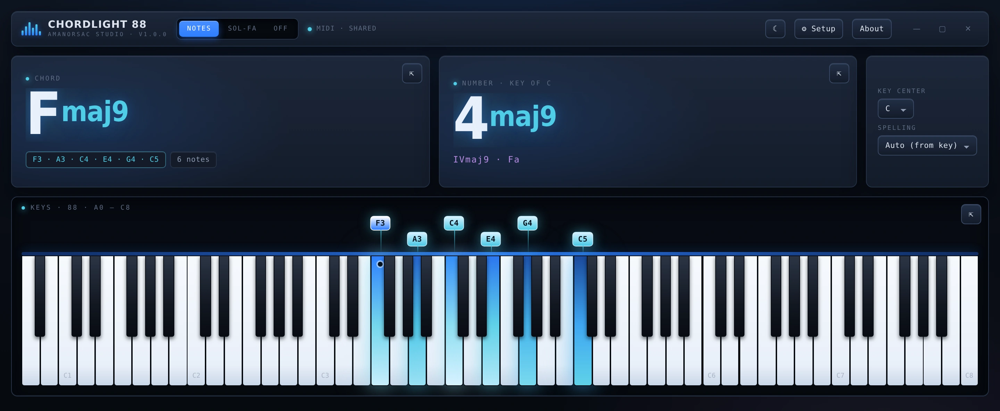
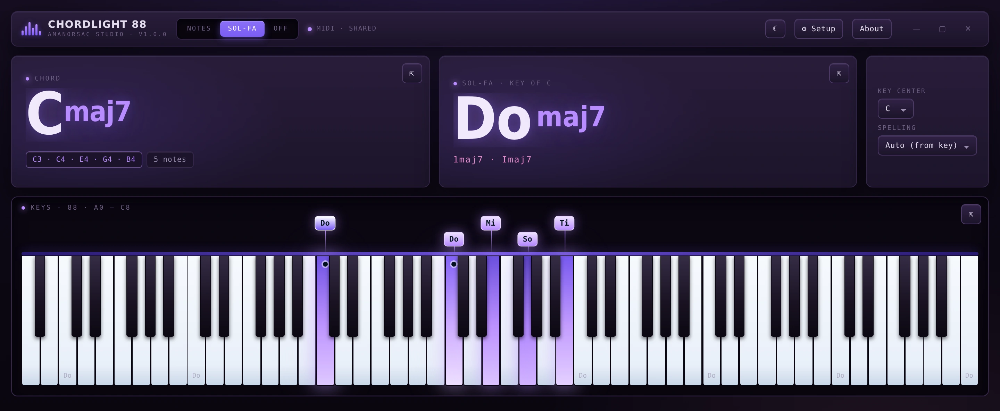

Chordlight 88 is an 88-key display for keyboard players. Play, and the keys light — brighter the harder you hit them — the chord is named as you play it, and the same chord is read as a number in whatever key you set. One switch puts all of it into sol-fa. And it never takes your MIDI port, so your DAW and your sampler keep the same controller.
$14 once · version 1.0.0 · Windows & macOS · no account, no activation, no network

Six notes down · Fmaj9 · 4maj9 in the key of C · lit by velocity
The problem
Every other chord display takes your keyboard away from you.
1→3apps on one controller at once
Open a chord tool on Windows and it claims the MIDI port for itself. Kontakt goes quiet, or the DAW stops receiving, or the app reports the device as busy — so the thing that was meant to help you play stops you playing.
Chordlight opens no port exclusively. It listens alongside whatever else is holding the controller: your DAW, your sampler and Chordlight all hear the same keyboard at the same time. Virtual cables — loopMIDI, LoopBe, IAC — appear like any hardware port, and a keyboard plugged in mid-session shows up without a restart.
That is the whole reason it exists. Everything else on this page is what it does once it is out of your way.
Numbers and sol-fa
Not everyone thinks in letters.
Chord displays name chords in letters. A large part of the keyboard-playing world — worship, gospel, choral, most of the teaching world — works in numbers and in sol-fa. Chordlight reads all three at once, from the same hands.

One switch · Cmaj7 in C reads Do maj7 · a triad on 4 reads Fa major
Set the key once
Every chord after that reads as a number in that key. Fmaj9 in C is 4maj9, with the Roman numeral under it.
The full ladder
Do Di Re Mo Mi Fa Fi So Si La Ta Ti. Chromatic syllables included, not just the seven.
Letters too
Root, quality, slash bass and the notes sounding — with the bass note marked on the keybed.
Built for a camera
Three windows that stay where you put them.
The chord, the number and the keys each detach into their own always-on-top window, and each docks back on its own. On macOS they float over full-screen apps. Nothing is left duplicated in the main window.
0pixels of movement when the chord changes
The readout geometry is fixed, so a two-character name and a nine-character name occupy the same space. A recording does not jump when the chord does. That was designed in, not patched on afterwards.
Each readout is its own window. Put them where the frame needs them.
Appearance
Six accents, light and dark.
The whole interface retints from the accent — panels, borders, text, and the velocity glow on the keys. Key height is yours to set, from a strip along the bottom of a stream to a keybed that fills a projector.
Light mode, amber accent. The same interface, retinted.
Who it is for
Four rooms it was built in.
Worship and gospel keyboardists
The number readout and the sol-fa. You think in 1–4–5 and Do–Re–Mi, and every other chord display speaks only letters.
Teachers and music directors
A projector-sized readout of what the player at the keyboard is actually doing, in the notation the room uses.
Producers and session players
Name a voicing you found by ear, mid-take, without stopping the DAW or reaching for a plug-in.
Streamers and teachers on camera
Three detachable always-on-top windows that sit over a screen recording and do not move when the chord changes.
$14Once, and that is all
No account. No activation. No network.
Fourteen dollars, and once it is yours it simply runs: offline, with no key to type, no server to reach and nothing phoning home. It reads your MIDI input and nothing else on your machine. You buy it here because that is where the download lives, not because the app will ever ask who you are.
Being straight about this is what keeps the reviews honest.
Is it a transcription or notation tool?
No. It names what is sounding now. It writes nothing down and exports nothing.
Does it listen to audio?
No. MIDI in, and nothing else. It cannot hear a recording, a microphone or a track.
Is there a plug-in version?
No. It is a standalone window, not a VST3 or an AU. A plug-in would be a different product, and this page is not promising one.
Will it really share any keyboard?
Almost any. There is one exception: a controller whose manufacturer ships an exclusive-access driver cannot be shared by anything at all. Route it through loopMIDI in that case and everything downstream works normally.
Do my settings sync between machines?
No, because there is no cloud to sync them through. Preferences live in a file on the machine, at the path in the specification above.
What does activation involve?
Nothing. Buying puts the download in your My Apps, and after that the app has nothing to check and no way to check it. Install it on every machine you own.